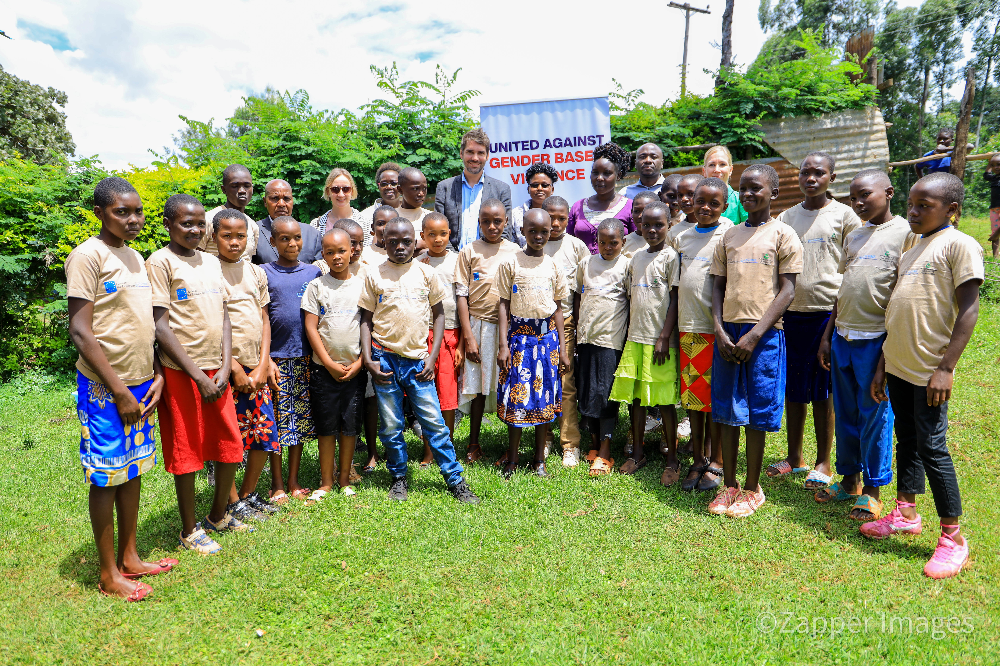
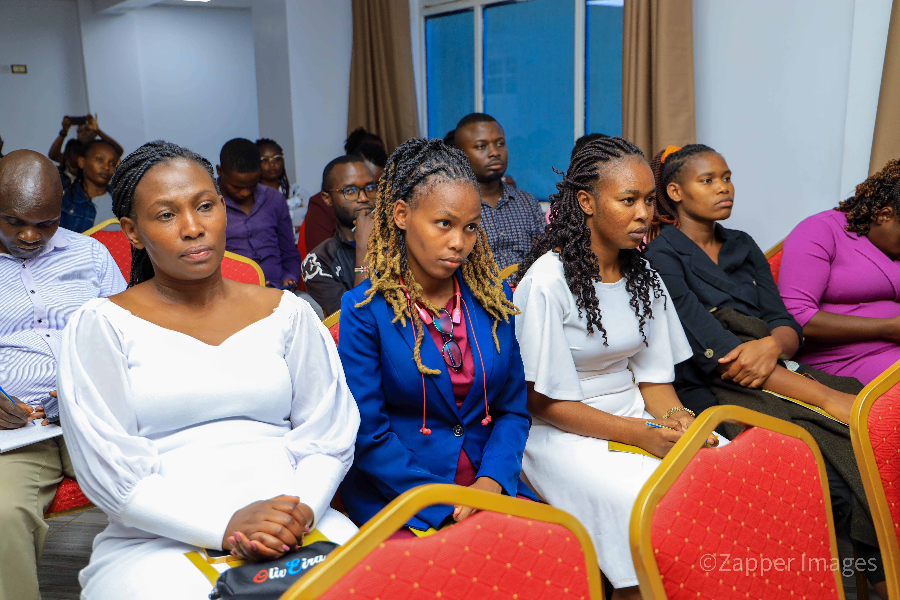
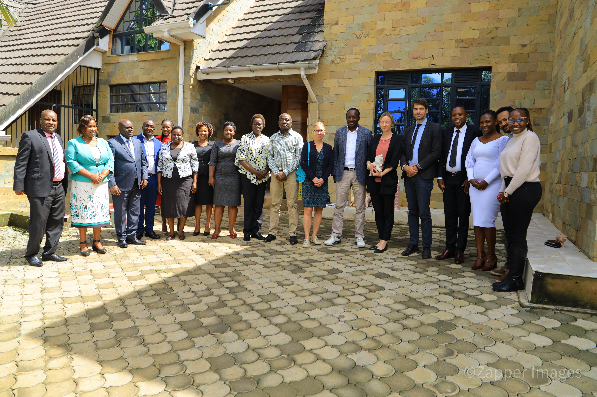

Video Documentary
International Red Nose Campaign Story
Documentary feature capturing life and community dignity without FGM, utilized globally for resource mobilization and advocacy.
A visual showcase of field activities, video documentaries, community outreach programs, and organizational press engagements.
Documentary feature capturing life and community dignity without FGM, utilized globally for resource mobilization and advocacy.

Field session in Kisii County focused on gender-transformative dialog and public awareness on human rights.
National broadcast feature discussing regional interventions and community advocacy efforts across Western Kenya.

Training regional media reporters on gender-sensitive reporting standards and ethical story production.

Capacity building meeting with 30 grassroots grantee organizations under the EU-funded communications framework.
Audio-visual podcast episode featuring local activists discussing health rights and community safety.